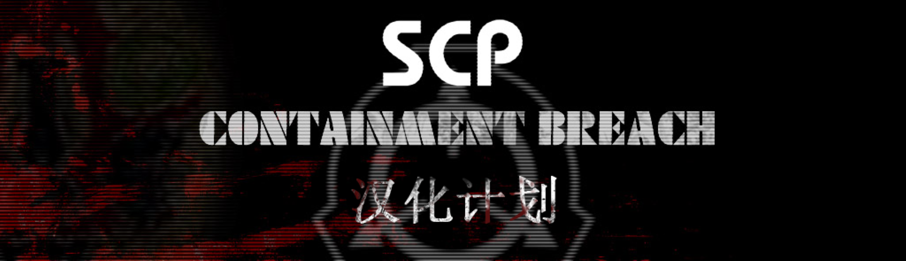

从2018年1.3.11更新之后，虽然很多人都尝试做过汉化，但最终基本都停留在了贴图部分
我们的汉化目标为整个游戏（包括贴图、文字、添加字幕、独立工具及其他各种杂项）
——子悦解说
关于
对SCP - 收容失效 1.3.11版本进行中文翻译，范围包括贴图、文字、字幕、独立工具及其他杂项。
由子悦解说发起，子悦汉化组开工实现。一期技术支持：飘流瓶儿（7552169）。
汉化阶段
第一阶段
技术测试Technical Preview：2020年5月5日-2021年10月14日（2021年10月14日发布）
字幕技术测试Subtitle Tehnical Testing：2021年10月14日-2021年10月17日（2021年10月17日发布）
初期测试Alpha Tesing：2021年10月17日-2021年11月3日（2021年11月3日发布）
后期测试Beta Testing：2021年11月3日-2021年12月1日（2021年12月1日发布）
末期测试Final Testing：2021年12月1日-2022年1月1日（2022年1月1日发布）
预发布测试Pre-release Testing：2022年1月1日-2022年2月1日（2022年2月1日发布）
一期测试First Phase Testing：2022年2月1日-2022年4月1日（2022年4月1日发布）
第二阶段
二期技术测试Second Phase Tehnical Testing：2022年3月1日-2022年5月1日（2022年5月1日发布）
二期汉化Second Phase Localization：2022年5月1日-2022年5月16日（2022年5月16日发布）
排错测试Debug Testing：2022年5月16日-2022年6月1日（2022年6月1日发布）
发布版本
正式发布Release：2022年6月1日-2022年7月1日（2022年7月1日发布）
第二版Second Revise：2022年7月1日-2022年8月1日（2022年8月1日发布）
第三版Third Revise：2022年8月1日-2022年9月1日（2022年9月1日发布）
第四版Fourth Revise：2022年9月1日-2023年1月1日（2023年1月1日发布）
里程碑
- 2020年5月5日：汉化计划成立
- 2021年10月8日：技术突破
- 2021年10月10日：子悦汉化组成立
- 2021年10月14日：技术测试发布
- 2021年12月12日：中文维基建立
- 2022年2月11日：汉化组网站建立
- 2022年3月11日：中文网站建立
- 2022年6月7日：汉化组论坛建立
- 2022年6月10日：汉化组网盘建立
数据统计
相关链接
站内链接：SCP - 收容失效 中文网站
百度贴吧：SCP收容失效1.3.11 汉化计划
ModDB：SCP - Containment Breach 汉化计划
哔哩哔哩：SCP收容失效新版本汉化计划！
爱发电：子悦解说正在创作SCP - 收容失效 汉化计划 | 爱发电
站内存档：哔哩哔哩专栏存档